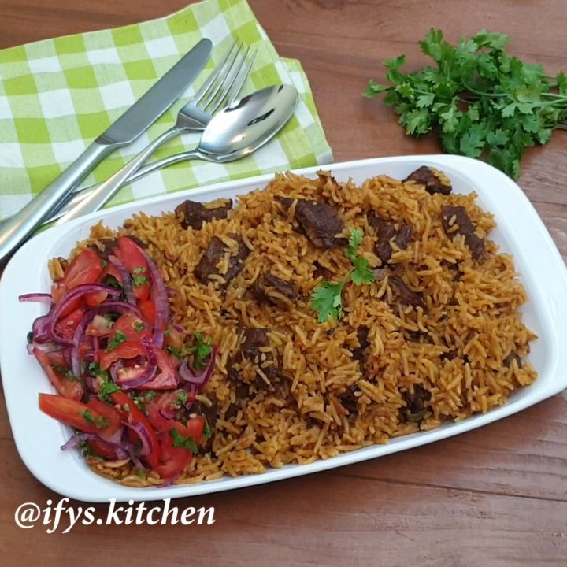

Ingredients
- 2 cups of basmati rice
- 500g beef (cubed)
- 2 onions (sliced)
- 3 cloves garlic (minced)
- 1-inch piece of ginger (grated)
- 2 tomatoes (chopped)
- 1 tsp ground cumin
- 1 tsp ground coriander
- 1 tsp cinnamon
- 1 tsp black pepper
- 1 tsp cardamom
- 1 tsp turmeric
- 2 potatoes (peeled and cubed)
- 1 beef stock cube (optional)
- 3 cups of water or beef broth
- 3 tbsp cooking oil
- Salt to taste
Instructions
- Boil the beef with a pinch of salt, garlic, and ginger until tender. Set aside with the broth.
- In a large pan, heat oil and fry the onions until golden brown. This adds flavor and color.
- Stir in cumin, coriander, cinnamon, cardamom, turmeric, and black pepper. Cook for 1 minute until aromatic.
- Add chopped tomatoes and cook until soft. Add the boiled beef and let it absorb the spice mix.
- Stir in the potatoes and cook for 3-5 minutes.
- Add the washed rice, beef broth or water (3 cups), and season with salt. You may add a beef stock cube for more flavor.
- Bring to a boil, then reduce heat, cover, and let it simmer on low for 20 minutes or until rice and potatoes are cooked.
- Once cooked, fluff gently with a fork and allow it to rest covered for 5 minutes.
- Pilau is best served hot, accompanied by:
Kachumbari (a fresh tomato-onion salad with lemon juice)
A wedge of lemon on the side
Cold soda or fresh juice
Optional: A side of raita or plain yogurt balances the spice.